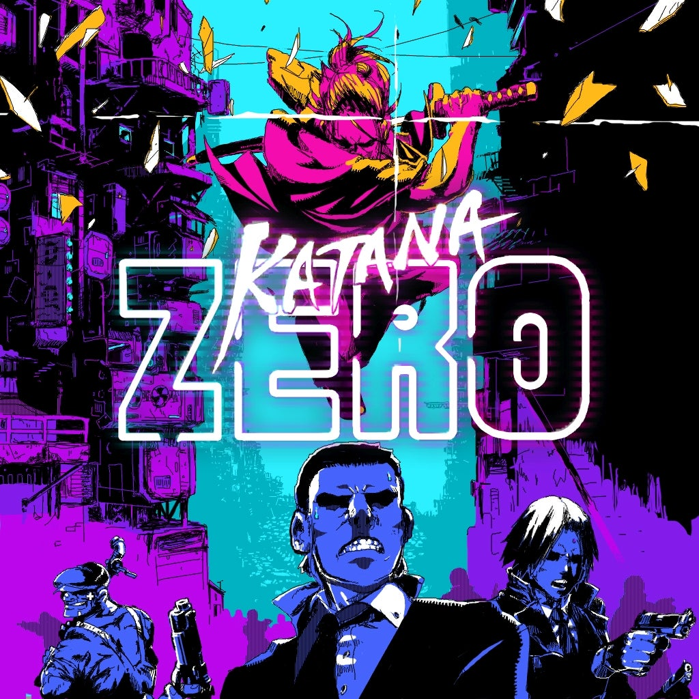
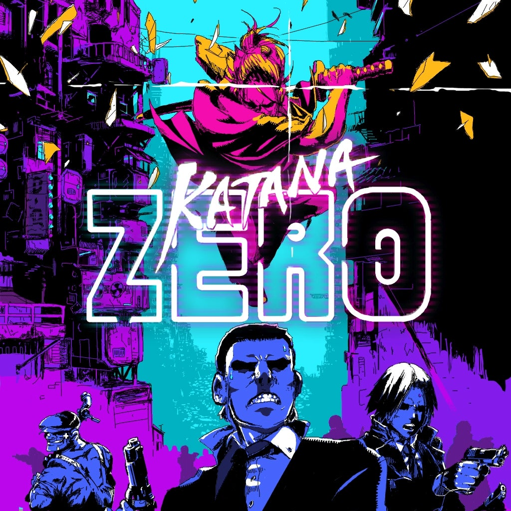
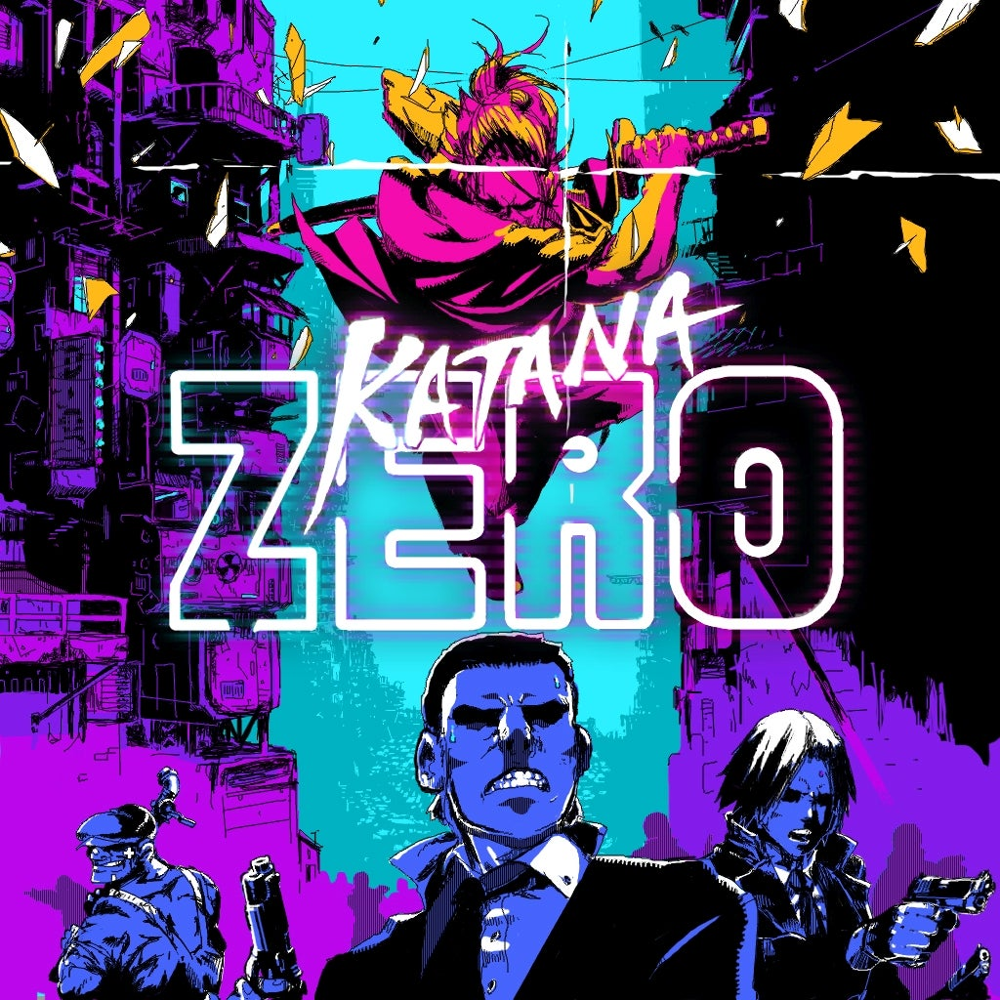

Meu nome é Valdenilson Felipe Souza Silva, tenho 18 anos e me interesso por programação desde os meus 14 anos. Meu interesse por programação começou graças ao meu maior hobby que é jogar video-game, alguns dos meus jogos favoritos fizeram meu interesse creser ainda mais, como:

E enquanto eu estudo para entrar na área de programação eu trabalho como atendente e ajudante em uma loja de doce. E além de programação outros interesses que eu tenho é com música e escrita de historias, eu tenho experiencias escrevendo algumas historias que costumo mostrar para amigos meus.